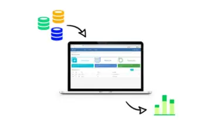
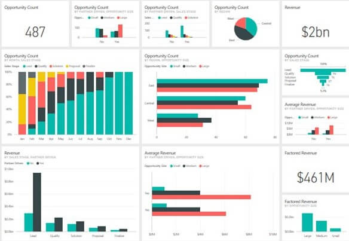
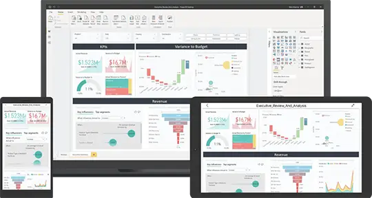

Happy Customers
We have clients from all over the world, including US, UK, Australia, Middle East, Canada and India
In the fast-paced and competitive business scenario of today, acting on data is not a clever decision-anymore, it’s a necessity. Take advantage of our Business Intelligence (BI) Implementation Services where we help organizations translate raw data into strategic decision-making and long-term growth-enabling insights.
Our team consists of three experienced professionals with a high level of experience in BI in various industries. Our service offers your BI process expertise by following veteran professionals.
Knowing that every company is unique, solutions are tailored to fit your business. Our customized approach makes your BI an integral part of your business dynamics.
Business evolves, and so will your BI platform. Our solutions support business growth within your company, growing your data capabilities with your business.
Our goal is to not only implement BI but to deliver quantifiable results. We are committed to delivering actionable insight for business success with quantifiable impact and consistent improvement.
Put your BI program on the correct path with a successful strategy. Our experts work with your organization to set goals, identify the key metrics, and create a successful implementation of BI. With this approach, BI is aligned with your business as a whole.
We comprehend that each business is different. Our BI solutions are designed to suit your requirements, whether it is using widely popular BI software or developing customized dashboards. Our focus is on incorporating your specific requirements in your BI system so that it surpasses your expectations.

Burying complex data into actionable insight requires smart visualization. Our specialists craft understandable dashboards to enable stakeholders to easily read data. Visualization is the most important means to your data potential.
Empower your staff with intelligence to spur BI maximum. We give on-the-job training and support to enable your staff to work with ease via BI tools. We aim to instill BI into your culture.
An optimized BI system will need to be optimized every now and then. We do beyond implementation by monitoring the performance of the system, seeing where we should optimize, and then optimizing. Taking this proactive step keeps your BI system operating at maximum capability at all times.
Strong BI foundation begins with strong data warehousing and integration. Our technical experts bring your data sources into harmony so that your data integrates well, creating a common data repository. This makes data easier to manage and creates a good platform for analysis.
Rest assured that your information is safe. Our BI implementation centers on security and compliance through imposing measures for protecting key data.
Affordable is the mantra. Our BI solutions provide cost-effective solutions for ensuring affordability without sacrifice while maximizing return on investment.
Stay ahead of the curve with our latest BI implementation. We constantly refresh your BI and align it with industry best practices.


We work with clients throughout the process, and the BI solution exceeds expectations.
Make decisions faster with real-time analytics. BI implementation includes mobile integration, so you are always connected to your data.
User adoption is what drives success with BI. We construct plans for you to implement new BI tools successfully.
Your investment in BI should yield measurable returns. Our services track and measure the impact of BI on your business results.
We have clients from all over the world, including US, UK, Australia, Middle East, Canada and India
We have developed numerous complete web & mobile app for our clients across the globe.
We as an organization believe that client satisfaction begins from requirements definition phase to design, feedback cycle and golive.
We operate on all the top technology stacks such as .NET Core, MERN, MEAN, React Native, Swift, Java and many more.
With information overload, businesses must possess a keen way of cutting through it and drawing meaningful conclusions. Enter Business Intelligence-a method of collecting, analyzing, and presenting data graphically to allow decision-making insight.
BI is the foundation of smart decision-making since it offers an open view of past, current, and future data. From sensing market trends, customer habits, or optimizing processes that BI directs your business on the right path.
In a day and age where information is everything, staying ahead of the pack is more than gathering facts-its about utilizing them. BI puts the power in your hands to understand your business and gain an edge, outsmarting the competition.
Take the journey of smarter decision-making and a brighter future with our BI Implementation Services. Contact us today to see how our services can make your data assets sparkle, fuel innovation, and put your business on the journey to long-term success in the data economy of the future.


"Good experience overall. My 3rd project with them overall. Will highly recommend using them."

Tom WymanWeb Designer
"Its been a pleasure to work with CloudConverge.io team. They have a great team, including their Customer Success Manager who was great help to us. We have been doing great during our peak sale season, without any hickup. Great job guys."

Richard HellerCEO
"We are really happy with how quickly we were able to launch the project, they had a really seamless process of getting our existing database and agents onboard, manage their leads & properties. We will definitely recommend using them for any web solution project. They have a great team in place with a talent to understand business intricacies."

Samuel CorrensLong Island RE
"We were looking to modern a lot of aspects within our organization including migration to Business Central as ERP, implementing Microsoft 365, Cloud Services and Web Development. We at Kabu Projects and Atmos are happy to refer Cloud Converge team and all IT services. They are well-versed with the best practices, have a good project management and software team."
Kabu Projects
"We are a non-profit were organizing a large event which includes delegates and attendees from all over the globe. The way Cloud Converge team handled our web presence, online payment system was truly exceptional. The entire process including site design, implementation of CRM, integration with partners, live dashboards were all delivered in record time. Most of all, because of the high footfall on the event, we had thousands of registration on launch itself, the way the entire system worked effortlessly was a great experience for all stakeholders. We have done similar launches in the past with varied experiences, no doubt, what Cloud Converge delivered is something we will continue to use for years to come."

Entrepreneur's Organization Gurgaon
"We are very happy with the project delivered by the CC team. The entire development process has worked seamlessly for us, with regular updates, thorough testing of deliverables, great ideas throughout the development process."

Barry SarnoffCEO